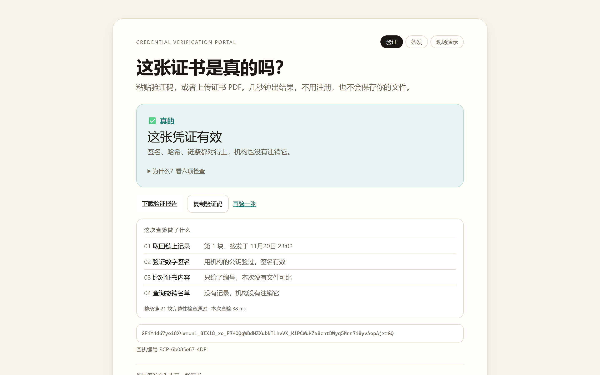
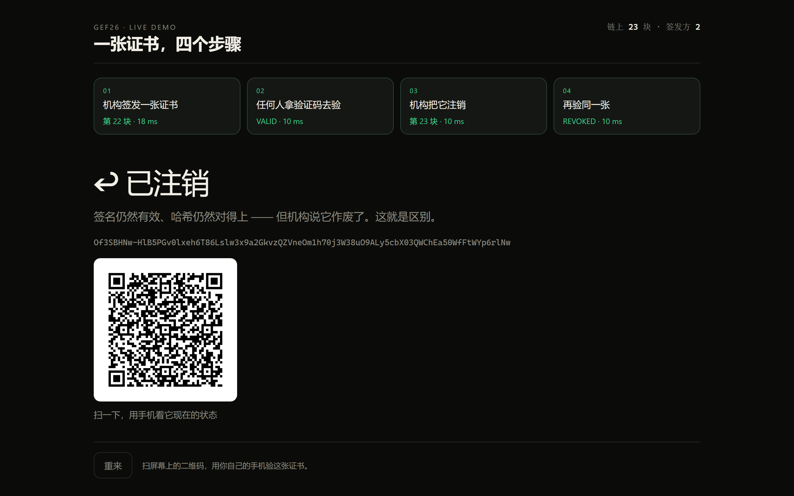

紙本與 PDF 截圖誰都能改，學校網站又只給人看一張圖。我們讓每一張憑證都帶著 機構的簽名、一個上鏈的編號，和一句任何人都查得到的結論。
簽發、驗證、註銷、再驗 —— 每一步都是一次真實的 API 調用，也是鏈上一條只可追加的記錄。
機構以 ML-DSA-65 加 RSA-PSS 雙簽，寫入一個新的塊。
任何人拿驗證碼或 PDF，免註冊，六項檢查一次做完。
追加一條撤銷記錄；PDF 不重簽，簽名本身仍然有效。
簽名與哈希仍然對得上，但機構說它作廢了 —— 這就是區別。

結論下面直接寫出取回第幾塊、簽發時間、驗簽結果、哈希比對、撤銷名單， 最後一行是整條鏈的完整性與這次查驗的真實耗時。

每一步跑完就在卡片上寫下塊號與毫秒數；跑完停在「↩ 已註銷」， 二維碼指向同一張證書，觀眾可以立刻用手機驗。